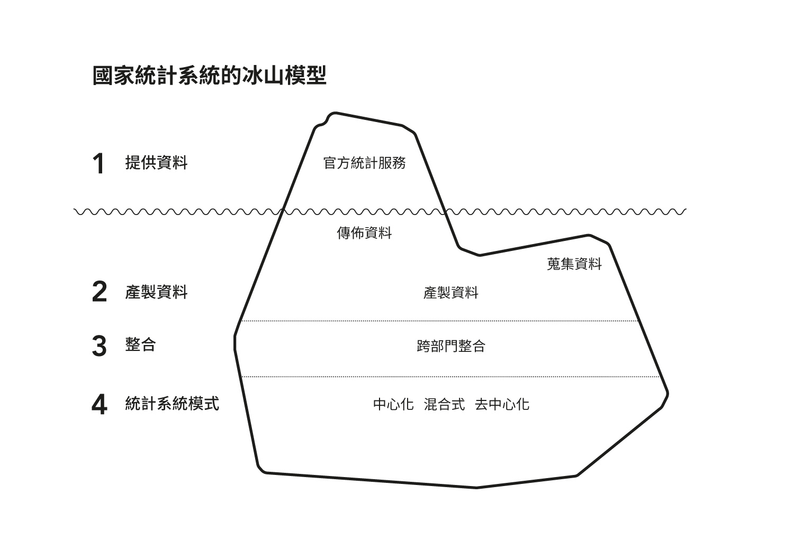
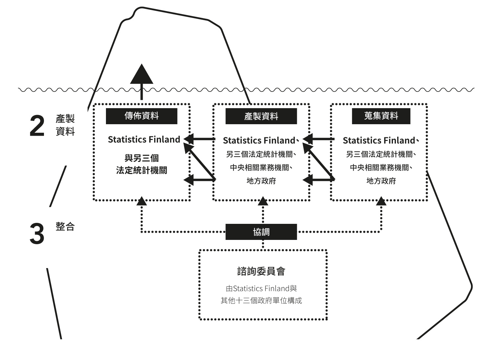
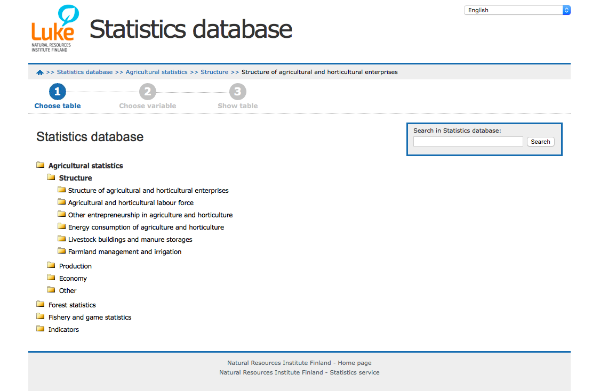
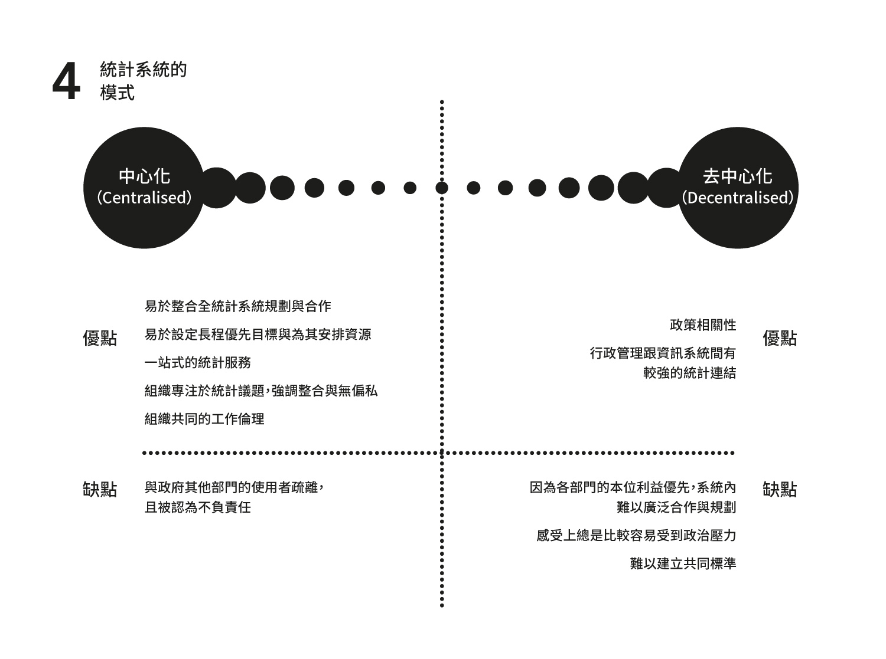

為什麼台灣的官方統計這麼難用？（二）
目錄
「架構式創新的本質，是調整一個既有的系統，把既有元件換個新方式連起來。」– Henderson 與 Clark (1990)
架構（Architecture）作為一種系統內元件的連結圖式，是如何影響一個系統的最終服務？這是這篇文章要分析的事情，由國家統計機關發布的官方統計，一般來說被視為最具權威性的資料來源，可以用以描繪一個國家的樣貌。官方統計的產製與發佈是很複雜的，而最後服務的呈現與體驗與之息息相關。
我要簡單的分析芬蘭國家統計系統的架構，然後以之與台灣做比較。因為時間跟篇幅都有限，所以我不討論每個細節跟優劣。我只想專注在幾個跟服務結果有關的重要架構特徵，然後，呈現這些關聯，並凸顯架構的重要與改變它所帶來的潛力。
芬蘭的官方統計系統
產製資料: 架構在收集、加工、散佈資料過程扮演的影響力
國家統計系統的冰山模型
上面簡單帶過了芬蘭與台灣的國家統計服務，這一小節，我要說明統計服務在冰山下產製資料的架構。冰山下的架構包括產製資料、整合、統計系統的模式。這些架構是息息相關而且事實上難以切割的，但為了概念上敘述方便，我仍然試圖條列說明。不過也因為難以切割，為了文意通暢，台灣的部分，我會放到最後面才說明。
Statistics Finland是芬蘭的財政部下一個獨立的統計機構，芬蘭統計法第一章第二段：法定統計機關包括 Statistics Finland、以及另外兩個政府內的研究機構：芬蘭自然資源研究所（Natural Resources Institute Finland）、芬蘭衛福研究所（National Institute for Health and Welfare）、最後是海關（Finnish Customs）。
而算進不具法定統計機關地位的單位，實務上資料的提供者零零總總包含了14個政府部門，可以按照功能的不同，以及中央與地方政府來做簡單的區分。按芬蘭統計法規定，無論資料搜集由哪個部門當責，最終這些資料由法定統計機關負責統籌與發佈，而不具法定地位的行政單位有義務提供資料。例如，有關社會安全如孩童福利、社會支持體系的支出、學生財務支持等，由Kela提供（Kela在芬蘭扮演社會保險機關的角色）。此外，自治市的資料則由自治市政府提供。我整理一個概視如下圖：
如何產製芬蘭官方統計服務的資料（此圖上半部）
如上圖，整體的產製流程可以分成三個部分：收集資料、處理資料以及傳布資料。雖然Statistics Finland自己編製了大約佔全部 2/3 的資料，在整個流程扮演關鍵角色，龐大的工作仍然是芬蘭政府部門的跨部協作。
在傳布資料的部分，則統一由 Statistics Finland 做為入口，大部分的資料都能藉由Statistics Finland提供的PX-Web介面取得。但實際測試，仍然有部分資料是從Statistics Finland外連到資料原搜集單位，再從該單位自行提供的PX-Web系統下載。例如由另一個法定統計機關「自然資源研究所」處理的農林漁牧統計，就是獨立在該所的PX-Web網站內。
Luke 的 PX-Web 首頁截圖
但至少，就目前的觀察，所有的政府統計，都能成功地以Statistics Finland作為入口而觸及。
整合：政府如何整合複雜的系統？
政府跨部門的整合不是容易的工作。有鑒於Statistics Finland的一個主要任務就是管理以及發展國家統計服務，建立一個組織來協調部門間的溝通，就很重要。
Statistics Finland的諮詢委員會扮演整合統計系統運作的角色（此圖下半部）
Statistics Finland的諮詢委員會（Advisory Board）在此承擔了這個責任。他是一個由Statistics Finland以及前述其他13個部門（同樣作為國家統計資訊的產製者）的代表組成的論壇。
其中一個產出是前述的 PX-Web API。Statistics Finland負責整合所有的統計資料，其中大部分的資料都可在PX-Web的網頁介面中取得。如同前述它是個圖像化的使用者介面，讓你可以選擇資料集中的不同變項，並且產生表格且提供CSV, JSON, XML等主流格式以供下載。藉由協議並建立相關的API規範，跨部門的資料傳遞與轉換成本，從蒐集到傳布，都可以大幅降低。
統計系統的模式
「世界上沒有一個地方有這樣的國家，能讓單一機構承攬所有國家官方統計資料的搜集。相反地，這些統計系統落在一個連續體上。」 (Statistical Division of United Nations, 2003，筆者譯)
每個國家都有自己的統計系統，而他們可以用中心化或去中心化來稱呼。中心或去中心化的標準，在於其產品如何被產製以及傳布——例如：是不是有一個中央機構負責提供這些服務？這個中央機構被給予多大的權威？
如果超過多數的統計產品，是由國家的中央機構產製與傳布，那我們稱之為接近中心化；相對來說，去中心化就是指統計來自數個有不同責任的單位——例如在芬蘭，移民統計來自移民服務單位以及戶政機關，而非 Statistics Finland。OECD組織PARIS21 (Partnership in Statistics for Development in the 21st Century, 2005) 會議的報告指出，世界上大部分的國家，統計系統都是在完全中心化跟完全去中心化兩個極端構成的連續體中間的混合地帶，簡單的比較（我自己翻譯的）如下圖：

芬蘭的部分，如果考慮大部分的統計資料仍然由獨立統計機關Statistics Finland產製並發布，是偏向中心化的作法。但顯然保有去中心化的特徵。
台灣的官方統計系統
統計產製
台灣的主計系統基本上是獨立的組織，行政院主計總處是最高機關，從中央到地方一條鞭地管理全國主計單位，有獨立的人事權，而主計系統的公務員基本上是獨立行使公務，不受所在機關的直接指揮。是以這個系統是相對獨立地、科層地運作，與芬蘭協作的模式有所不同。
整合組織
有鑒於主計系統獨立，台灣沒有類似芬蘭統計諮詢委員會的整合性組織設計。只有統計法規定之全國主計會議有所相關，不過實務上，該會議據主計總處資料顯示，從1941年在重慶第一次召開至2010年，凡七十年間，才開十次會，在跨部門整合的作用上形同虛設。如同上面討論的，我們可以看到芬蘭的 Statistics Finland 是必須跟十數個政府部門合作才能取得統計資料。或許是因為台灣的主計系統獨立，跨部門常態性的協作管道的需求，就公務員的感受而言可能不如芬蘭那樣殷切。
但主計總處仍會就個特定工作事項，召集相關部會開會研議或以專案小組會議行之，另一種是由其他中央部會（例如國發會）、中央常設性會報（例如行政院科技會報、（前）人口政策會報）、專案會議等就主計相關事項邀請主計機關參加或主計長擔任委員。這是相對特定任務導向，非以統計專業需求所設置的整合管道。
最後是主計體系會召開自己的主計會議，原則上是每月召開一次，由主計長、副主計長及主計官所組成，以主計體系內部事務為主。
統計系統的模式
藉由上述的介紹，從主計系統獨立從產製到發布一條鞭式的體系，以及缺乏常設跨部門協調組織的特徵，我們或許可以據此說，台灣的統計系統在運作上是相較芬蘭更偏向中心化的。
不過，主計系統獨立不等於統計機關獨立，主計系統的核心業務包括歲計、會計與統計。統計只是其中一環，這有別於一般偏向中心化體系的國家。
在中心化與去中心化這個連續體上面的位置帶來的影響，就如同Bill McLennan （澳洲前統計局長）所說：「在回應政策需求與整合統計服務之間的兩難」（policy relevance versus statistical integrity）。一般來說，越偏向去中心化的組織，部門間工作整合的需求與困難也越大，需要花更大的溝通與業務成本去提供一致的國家統計服務體驗；反面來說，如果有強有力的中央權威機構負責統計，集中的科層管理下，整合相對較無困難，問題卻在於，統計機關不一定能有效率的回應不同政府部門的統計資訊需求，不是統計單位無法敏銳地及於資料搜集現場（通常是特定政府業務或是地方機關），或甚至出現工作重複的狀況。
是以理論上，在整合資料上面，台灣應該要會比芬蘭的統計體系更有效率，試想像芬蘭如果要制定新的統計規範或工作守則，必須召集14個相關部門開會協調，而台灣基本上屬於主計系統的內部業務。
那為什麼我們看到的服務是這麼破碎？
簡單討論體制差異帶來的優缺點，還有如何影響最終的服務
中心化與去中心化理論上各自的優缺點，似乎沒有完全體現在兩國的統計服務上，芬蘭雖然因為統計組織事權較為分散，使得一部分統計需要從 Statistics Finland 外連到其他主掌機關網站獲取，然而其提供相同的 PX-Web 介面，使得體驗的斷裂感並不如想像中嚴重。而台灣雖然有較為中心化的組織架構，但網站的體驗與介面卻極為破碎，顯然有其他影響因素。
我試圖提出幾個可能的解釋：
統計機關未獲得獨立地位，預算規模亦不足
以台灣為例，跟統計有關的最高中央單位是行政院主計總處，每年的預算只有約13億台幣，而且是包含歲計、會計、統計三種單位，其中 3/4 的單位都屬會計系統；而芬蘭光是Statistics Finland每年的預算規模就有約20億新台幣（全國統計相關單位加起來的話，則是約26億元新台幣）。而被立委余宛如辦公室認為可能可以參考的荷蘭中央統計局，是更為接近集中制的例子，每年的開支則高達 66 億元新台幣。
預算規模不足的狀況下，要提供像芬蘭那樣規模的服務是不可能的事，而在統計單位於主計系統裡面是少數的狀況，整個主計組織的規劃與資源分配，可能也比較難將統計工作的發展與整合擺在優先。國家統計網的統計介面跟資訊格式如此不齊整與零碎，猜測與此有些關係。
僵化的公務員聘用體系與台灣的統計機關缺乏 IT/設計 人才
在芬蘭，公務員制度採用職位制，也就是說，找工作跟去企業找工作是差不多的，各機關有獨立用人的權力。沒有高考這種統一考試，也沒有看年資升遷的系統，在私企業工作的年資跟經歷可以獲得採認，如果你想獲得更好的職位，你可以在政府部門間跳槽，不過跳槽方式跟我們一般想像的跳槽差不多，你也得跟來自外界的申請者競爭。
是以我們可以看到Statistics Finland 很自信地在網站上這樣宣稱：「Statistics Finland 的訪談與調查服務專業是芬蘭最頂尖的。」這樣充滿私企專業主義般自信的說法，這是職位制任用基於專業而非年資的效果。
而台灣是採取職涯制，雖然還是有內控與內部競爭機制，但仍然相對封閉。國家公務人員考試是由考試院統一辦理，而非各單位開缺自主聘用，統一的考項與專業與各單位實際的人才需求因此常常脫節；民間與政府間的人才更是缺乏流動。以資訊工程相關領域來說，技術演進極快、專業劃界也不斷變動，政府要提供相關服務，是有一定負面影響。而攸關最終體驗的服務科學、設計領域，則一直未曾出現在國考的招考類別中。最後是主計體系的高階官員的資訊素養，不一定跟得上時代，而職涯式的文官制度，使做到主計體系高職等的官員，往往接近六十歲。
看到我們的統計網仍然用非常過時的資訊提供方式，例如只提供ods跟excel檔，只用pdf發布報告、網站沒有自適應設計（RWD）等，以及支離破碎又重複的服務提供方式，其實是相當程度反映了主計單位內部的人力資源問題。如果政府機關要開標案，找民間的單位來做，那機關還是需要有能力做好規劃並且了解業界/該專業領域運作方式的承辦人員，只是在很多單位裡這樣的人並不多，在主政欠缺良好專業素養與識別能力的狀況下，往往能退而求其次要求僵固量化的KPI，以及仰賴恩庇侍從般建立起的顧問關係與對特定公司的信賴與特殊待遇，來執行專案。
不過，台灣政府機關的網站仍然有亮點，其中一個便是國發會檔案局下轄的政府資訊公開平台（政府資料開放平臺 | 政府資料開放平臺），這個網站介面統一、簡單好用，外觀也顯然是用現成的 Bootstrap 框架。而且還做了很漂亮的跨部門網站連結即時資訊（各資料平臺網站連結 | 政府資料開放平臺），我很想知道這個網站是怎麼做出來的。
分析的限制
略敘幾點目前比較大的限制，雖然我覺得這篇算不上什麼研究。我用自我批評當作結尾吧。
欠缺對服務建立過程的理解/資訊
我不知道中華民國統計資訊網怎麼建起來的。哪些部份是外包，哪些部份是自建。同樣的，我也不知道芬蘭如何實際建立他們的末端服務。在歐盟，以歐盟2017年發佈的Europe’s Digital Progress Report (EDPR) 指出，芬蘭的公共服務數位化排名第二（2017）與第一（2016），而2016年歐盟發佈的eGovernment in Finland報告指出，（芬蘭的開放政府網站沒有台灣好用，而且還比台灣晚一年！）芬蘭早在 2002 年就開始數位政府的規劃，並且由財政部成立主責機關Public Sector ICT、服務開發機關Government ICT Centre Valtori等，雇用上千名資通領域專家，開發中央政府的資訊服務。我雖然查到芬蘭政府有具有彈性的公部門雇用體制，以及相當規模的主政機關，但我仍對具體的建立過程欠缺了解。
對官方統計學術領域的了解仍然不足
官方統計學術領域對衡量如何是好的官方統計服務，應該早有相當的爭論，我沒時間做足夠完整的review。
不過，我找到由Ron S. Kenett與Galit Shmueli（值得一記，這位是台灣清華大學服科所的教授，雖然我是大外行，但我判斷她在國際上算是有一定份量。）於2016年在Journal of Official Statistics發表的論文「From Quality to Information Quality in Official Statistics」，討論到前篇OECD使用的七個指標，以及歐盟使用的五個指標，都強調的是統計資料本身的品質，但是考量使用情境，更重要的是「資料」該怎麼變成可以使用的、有價值的「資訊」（information）。他們兩個發展了一套新指標，稱為Information Quality (InfoQ)，用來衡量官方統計作為「資訊」的品質。
這套指標蠻有趣的，非常的服務設計與使用者導向。縱使台灣的官方統計資料應該是有一定品質了，現行中華民國統計資訊網的服務，恐怕仍很難通過這套標準的檢驗。指標包含Data Resolution、Data Structure、Data Integration、Temporal Relevance、Chronology of Data and Goal、Generalizability、Operationalization、Communication。這邊就不贅述了，論文在後面reference裡面，有機會再補中文翻譯與說明。
改善的可能
這是非常淺薄的分析。考量統計資料本身品質應該尚可，我認為問題還是聚焦在服務介面的體驗。
我不認為台灣能夠/適合效法芬蘭的分散式體系，一方面向來獨立的統計系統要重新把業務劃歸各政府單位，轉換成本高昂；另一方面，台灣並沒有像芬蘭那樣職位制、與民間勞動市場流通、相對專業主義的文官系統，儘管現行職涯制的文官體系問題重重，我仍不確定是否有可能/適合轉換到職位制。設想若不轉換文官體制，分散的主計系統將使資源、規模都有限的地方/下級政府單位，更難培養統計人才，而依附所在單位的統計人員，能否超然獨立運作，考量某些地方政府的運作狀態，我持悲觀態度。
而芬蘭統計系統能夠提供堪稱完善的公共教育、甚至對業界提供顧問諮詢服務，仰賴統計機關的獨立、高度專業化與外部市場競爭的人才任用。但顯然這樣做，需要大量增加預算開支，有限資源的運用恐怕不如台灣歲計、會計、統計整合起來有效率。
事實上，現行政府中央機關提供的重要常態網路服務，往往嚴重過時、體驗極差，無法和既有組織運作良好整合。這個問題並非統計體系所獨有，而是台灣政府共有的問題。
反而往往是任務導向的網站，其所提供的資訊結構，較與組織運作無涉，也不須常態更新，才會有比較好的品質。例如柯文哲近期推出的政績宣傳網站。
其核心就在於，高齡化又嚴重資訊素養不足的中央政府事務官團隊，無法在既有標案、服務外包的過程中，開出合理的條件與執行細節、建立較長期的合作關係。而縱然有年輕一輩的公務員或能有較佳的相關素養，卻無法獲得上級完整授權，復加獨立的會計、審計系統防弊重於興利，影響公務員做出開創服務的意願。而這套體制要撼動談何容易。
在維持既有獨立體系與職涯制不動的前提下，短期能夠提升服務品質的可能，我認為是在中央政府獨立建立一個中期的辦公室編制，負責政府整體資訊服務改造的規劃與執行工作，延攬年輕的資通、管理、設計領域相關人才，繞開國考、外包與標案體制，直接就各部門的服務重新規劃與執行，建立長期的協調與合作關係。或許可以放在國發會下面，類似芬蘭由財政部成立主責機關Public Sector ICT、服務開發機關Government ICT Centre Valtori等，開發中央政府的資訊服務這樣的做法。
附註
統計相關法規
法規是在冰山最底處，基本上根本而原則性的定義跟說明上述這套系統運作遵循的原則。一般來說，最直接的法律基礎稱作「統計法」（Statistics Act），但同時「政府資訊公開法」（英文可能稱作 Openness in Government Activities Act）、「個人資料保護法」（英文可能稱作 Personal Data Act）、「行政院主計總處組織法」（芬蘭則為 Statistics Finland Act）也有相關規定。
前陣子行政院剛送出統計法修正的草案，我拿草案跟芬蘭統計法做了比較，主要注意到的幾點不同是：
統計項目與執行方式之決定
芬蘭：統計法第六段到第九段，規範統計機關如果要開啟新的統計項目，必須事先諮詢被統計對象或其代表。需提早至決策仍來得及改變前諮詢（例如，不提供資料時，罰鍰該多少？如何開罰？），最終決策須早於實際舉辦統計前通知。
台灣：有關決定統計項目者，主要著重在政府部門內部權責之劃分與溝通，沒有與被統計對象之諮詢的相關規定。新增規避、 妨礙或拒絕辦理基本國勢調查或指定統計調查人員進行統計調查的罰則，無芬蘭統計法相關之事先諮詢規定。
統計執行的方式
芬蘭：每次執行統計時，都必須告知該統計之用途。並且必須事先以郵寄的方式通知respondent。
台灣：統計人員須出示證件。（立法事由是避免詐騙）
統計資訊的公開
芬蘭：統計調查結果除了政府行為公開法之另有規定、個人資訊的保護，與影響經濟商業行為等事由可以屏蔽外，其餘都必須公開。
台灣：無強制公開之相關規定。
參考資料
Henderson, R. M., & Clark, K. B. (1990). Architectural innovation: The reconfiguration of existing product technologies and the failure of established firms. Administrative science quarterly, 9-30.
PARIS21. 2005. Models of Statistical Systems. PARIS21 Document Series, no. 6 (October). Consulted the 11th of January 2016, and retrieved from http://www.paris21.org/sites/default/files_2101.pdf.
Statistics Finland. Advisory Board of Official Statistics of Finland. Retrieved from http://www.tilastokeskus.fi/meta/svt/svt-ntk_en.html (Date visited: December 10, 2017).
Statistics Canada. (2016). Leadership and coordination of the national statistical system. Retrevieved from https://www.statcan.gc.ca/pub/11-634-x/2016001/section1/chap1-eng.htm.
United Nations. Statistical Division. (2003). Handbook of statistical organization: the operation and organization of a statistical agency (Vol. 88). United Nations Publications.
李秋嬿，年份不詳，〈政府統計組織之運作〉。中國主計協進社。http://www.bas-association.org.tw/catalog/arts/09303015.pdf，取用日期：2017年12月16日。
中華民國行政院，2017，統計法修正草案。中華民國行政院。https://www.ey.gov.tw/News_Content4.aspx?n=D0675BEBB0C613C7&s=A429F694C6D2651D，取用日期：2017年12月20日。
行政院主計總處，2017，組織職掌與人力。中華民國行政院主計總處。https://www.dgbas.gov.tw/ct.asp?xItem=19679&CtNode=1679&mp=1，取用日期：2017年12月28日。
行政院主計總處，2010，10次全國主計會議始末。中華民國行政院主計總處。https://www.dgbas.gov.tw/ct.asp?xItem=26930&ctNode=99，取用日期：2017年12月20日。